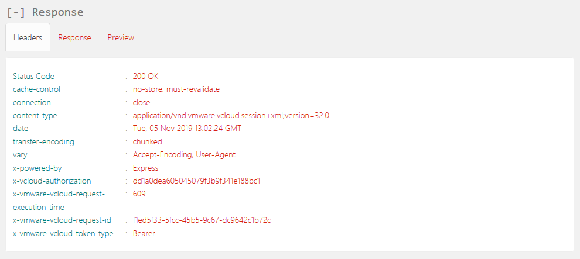

How to access vCloud Director through the vCloud API
Overview
To perform some tasks within your UKCloud for VMware environment, you may need to access vCloud Director through the vCloud API. This guide shows you how to access the vCloud API.
Before you begin
Before using the vCloud API, we recommend that you install a REST client that enables you to access the API. The steps in this article use a Firefox plugin called RESTClient. For information about how to install this plugin, see How to install a REST client to access the vCloud API.
Finding your vCloud API credentials
Before using the vCloud API, you first need to find your API credentials.
Log in to the UKCloud Portal.
For more detailed instructions, see the Getting Started Guide for the UKCloud Portal.
Select your account.
In the top right corner of the page, click your username and then select API.

The API page provides a view of your personal credentials for accessing the vCloud API. In particular, the page provides the following information for each compute service:
API URL - Use this URL at the beginning of your calls to the vCloud API.
Note
This URL will be different depending on the region in which your compute service is located.
API Username - The user ID to use to authenticate yourself with the vCloud API.
Note
The compute service ID is appended to the end of the username. This is because you may have access to multiple compute services.
Username - The API username without the appended compute service ID.
Org ID - Use this to uniquely identify the compute service (or vOrg) when using the vCloud API.
Password - For authentication with the vCloud API. This password is the same as the one you use to log in to the UKCloud Portal.

Make a note of the Org ID, the API URL and your API Username.
Obtaining an authorisation token
To start interacting with the vCloud API, you first need to obtain an x-vcloud-authorization token; to do this you need to adjust some settings in the RESTClient.
In your browser, click the RESTClient icon.

From the Method menu, select POST.

In the API field, enter the API URL you recorded earlier and append the following to the end of the URL:
/api/sessions
Next add a Basic Authentication header. To do this, from the Authentication menu at the top of the RESTClient, select Basic Authentication.

In the Basic Authentication dialog box, in the Username field, enter your API username recorded earlier from the API page.
In the Password field enter your UKCloud Portal password and then click Okay.

The Request section now includes an Authorization header.

Next add an Accept header. To do this, from the Headers menu, select Custom Header.

In the Request Header dialog box, in the Name field, enter
Accept.In the Value field enter
application/*+xml;version=32.0and then click Okay.The Headers section should now be displayed, containing the Accept header.

The RESTClient has now got all the required settings in place to make a request to the vCloud API to obtain a
x-vcloud-authorizationtoken, so click the Send button.When a response is received the Headers tab in the Response section will be populated, including an
x-vcloud-authorizationtoken.
The
x-vcloud-authorizationtoken will replace the Basic Authentication header added earlier. To do this highlight and copy the string of characters displayed after the wordx-vcloud-authorization.Note
If at any point while following the instructions in this guide, the output displayed in the RESTClient does not look similar to that shown in the images, you can use the value of the Status Code field to determine what went wrong and needs investigation. In this case above, Status Code received was HTTP 200 OK, which means that the request succeeded. For a list of HTTP response codes, see HTTP Response Codes.
To add an
x-vcloud-authorizationheader, from the Headers menu, select Custom Header.In the Request Header dialog box, in the Name field enter
x-vcloud-authorization.In the Value field, paste the string of characters copied in the previous step, then click Okay.

Now that you've obtained an
x-vcloud-authorizationtoken, you can remove the Basic Authentication Header. Click the x in the upper right-hand corner of the header.
You must send this token in a header with any subsequent requests to authenticate yourself with the vCloud API.
Feedback
If you find an issue with this article, click Improve this Doc to suggest a change. If you have an idea for how we could improve any of our services, visit the Ideas section of the UKCloud Community.